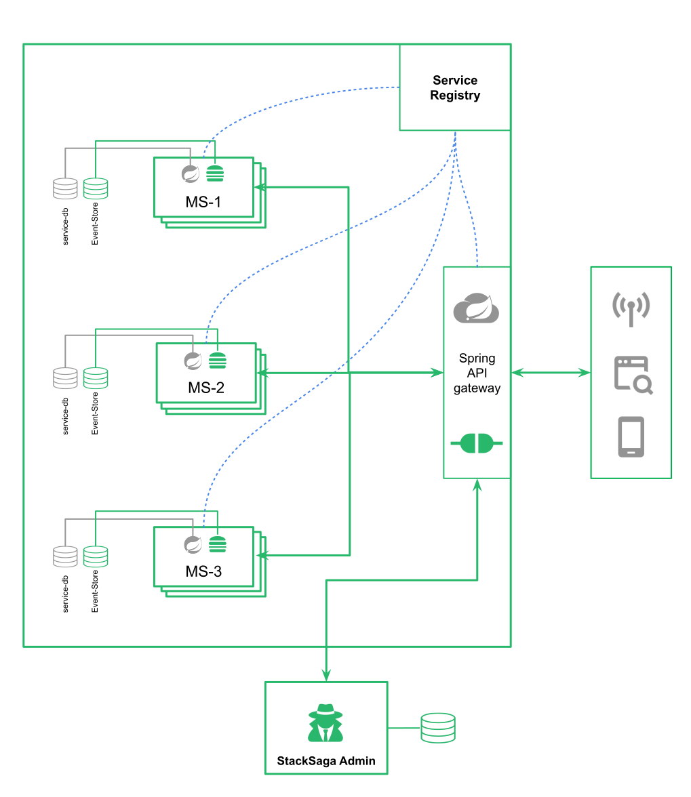

StackSaga in High-level
in the introduction, we got a clear idea of how microservice architecture works and what are the challenges that we have to face when implementing the microservice. here, we are going to explain how the stack saga works together with typical microservice architecture. here we have demonstrated a spring boot microservice architecture and how the StackSaga framework provides the Saga execution coordinator (SEC) capabilities without bothering to the default architecture.
After adding stack saga in the microservice architecture you can see there are some additional components in the high-level architecture diagram. in the diagram, the gray colour components and lines are related to the general microservice architecture and additional stacksaga related components and lines have been coloured by green colour. Let's discuss all the components and how they are interacted with general architecture. When you use StackSaga, you have to provide the facilities to create a database in addition to the database that you use for each microservice. This is also the same as the database per service design pattern. A service group (multiple instances of one service) uses one database to store the events of the executions. The only thing is newly added an extra schema. If you like to use one database for all microservices for StackSaga, it doesn't matter you can use one database as the event-store. But as a best practice, one database per service is recommended.
As a summary of the image above, you can identify mainly 4 components as new.in the next image below you can see those new component how interact with the general components.
- StackSaga Coordinator (A Library) and StackSaga Connector (A Library) are located in the individual services.
- StackSaga Shield (A Library) is located in the API gateway.
- StackSaga Server (A Standalone Application) is one separate unit that provides a dashboard.

Key Processes of ecosystem
To understand the relation of those components whole process can be summarised as follows.
-
Initialize the admin server with super admin.
As the first step, you have to create initialize the admin server. see the initialization steps.
-
Register API gateways with admin server
To connect the StackSaga your API gateway should provide an API-gateway-user credentials. Therefore, super Admin should create a user with API gateway authorization (role). After creating the API gateway user, the api gateway can be run because StackSaga Shield wll check your credentials connecting with the admin server.
For this process StackSaga server and StackSaga Shield were involved. see the implementation to see more in detail. -
Register each microservice with admin server.
To register the services in the admin server, the super admin or admin has to create a user for service with service privileges. As a best-practice the StackSaga team recommends you to create one user for one service group. (service group can have multiple instances but the service names are the same.) For instance, order-service should have a service user called order-service-general-user. And payment service should have a service user called payment-service-general-user. At the start-up the connector will verify your service credentials and let you the access to register and run the service.
For this process StackSaga Server, and StackSaga Connector were involved. see the implementation to see more in detail. -
Execute a transaction.
This is the main part that you are willing to see. The request comes through the API gateway as usual, and the StackSaga coordinator will obtain the request data that you pass, and the coordinator will handle all the process and executions as you have guided the framework.
see the implementation to see more in detail.
For this process only StackSaga coordinator was involved. -
Seeing transactions execution data.
To see tha execution data you should have to have a user account on the admin server. If you are the super admin, the super admin can see all the details. But as a best-practice, make sure to create a separate individual account for each user that wat to access the admin server to see the transaction data. After login to the dashboard, you have to give the access path of the API gateway that you want to access the services. you will be able to see the transaction data.
see the implementation to see more in detail.
For this process, StackSaga server, StackSaga Shield and StackSaga Connector were involved.